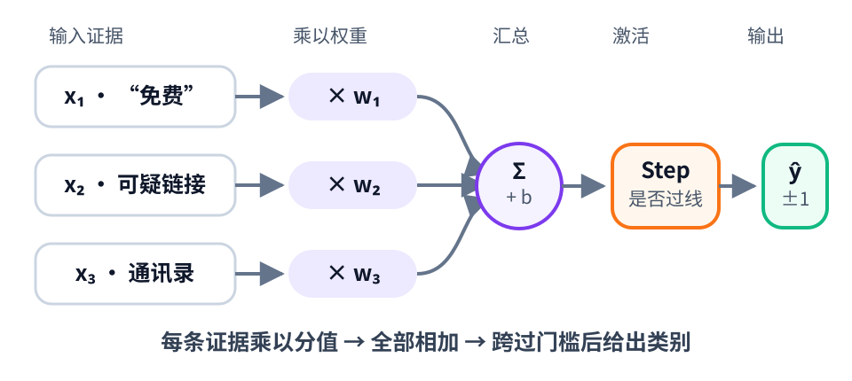
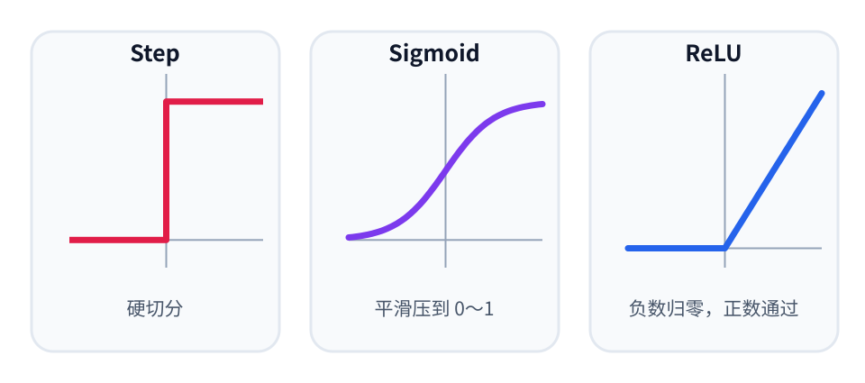
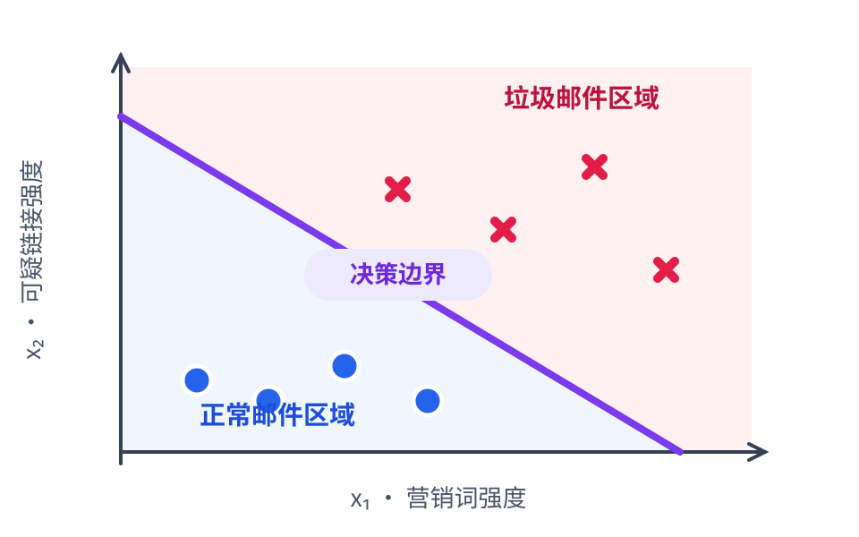
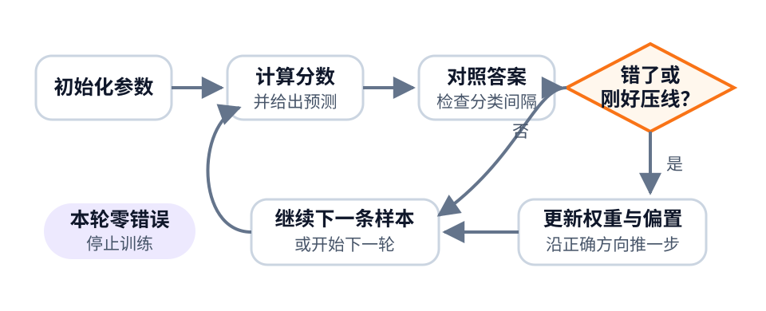

风起于青萍之末（上）：感知机如何学会画一条线
Posted on 二 14 7月 2026 in Tech
| Abstract | 风起于青萍之末（上）：感知机如何学会画一条线 |
|---|---|
| Authors | Walter Fan |
| Category | Tech |
| Status | v1.0 |
| Updated | 2026-07-14 |
| License | CC-BY-NC-ND 4.0 |
那么大的 LLM，起点居然这么小
第一次看到大语言模型的结构图，很多人都会有点发怵：几十层甚至上百层 Transformer，数十亿参数，一堆矩阵乘法，再加上 Attention、Softmax、LayerNorm、残差连接。图还没看完，信心先掉了一半。
可如果一路往回拆，拆掉 Transformer，拆掉深层网络，拆掉反向传播，最后会碰到一个极其朴素的东西：感知机（Perceptron）。
它做的事说出来甚至有点寒酸：接收几个数字，分别乘上权重，加起来，再看结果有没有超过一条线。超过就判为一类，否则判为另一类。代码十几行，公式两三条，连一杯咖啡都未必喝得完。
然而，风起于青萍之末。Rosenblatt 的感知机把一个要紧的想法落到了明确的学习算法上：我们不必手写所有判断规则，可以给机器一些样本，让它自己调权重。 从这个意义上说，感知机不是 LLM 的微缩模型，却是现代神经网络的一位直系祖先。
这个系列分成上下两篇。上篇先把脚步放慢，只讲清三件事：
- 感知机到底在算什么，又是怎样学会分类的；
- 阶跃函数和激活函数有什么区别；
- 它为什么能学会画一条分界线，又有哪些边界。
下篇再让 XOR 出场，沿着隐藏层、反向传播一路走到 Transformer 和 LLM。先把地基踩实，后面的高楼才不会看着像魔法。
这篇文章怎么读
这篇稍微有点长，但不用从第一条公式硬啃到最后。按自己的兴趣选一条路线即可：
| 你想带走什么 | 建议路线 | 可以放心跳过 |
|---|---|---|
| 只想听懂感知机 | 第 1、2、3、6 节 | 第 4 节代码、第 5 节证明和所有“数学加餐” |
| 想亲手跑起来 | 第 1 至 4 节 | 第 5 节收敛证明 |
| 想弄懂数学骨架 | 从头阅读，重点看损失函数与收敛定理 | 无 |
正文中的公式不是考试题。每个关键公式前后都会给一句大白话；看到“数学加餐”时，若不感兴趣，略过公式和推导，从加餐后的第一段正文继续，主线不会断。
1. 先认识这个最简单的“神经元”
假设我们要判断一封邮件是不是垃圾邮件。先别急着看公式，把感知机想成一个拿着计分表的门卫。
门卫不懂邮件内容，只检查三件事：有没有“免费”，有没有可疑链接，发件人是否在通讯录里。每条证据都有一个分值，支持“垃圾邮件”就加分，支持“正常邮件”就减分。
| 证据 | 输入值 \(x\) | 权重 \(w\) | 对总分的贡献 \(x\times w\) |
|---|---|---|---|
| 包含“免费” | 1（有） | +2 | +2 |
| 包含可疑链接 | 1（有） | +3 | +3 |
| 发件人在通讯录 | 1（有） | -4 | -4 |
| 默认偏置 | - | -1 | -1 |
| 合计 | 0 |
这个例子里，“免费”和可疑链接是可疑证据，所以权重为正；通讯录是可信证据，所以权重为负。最后再减去 1，表示门卫默认不会随便冤枉一封邮件。总分是 0，若规则规定“达到 0 就拦截”，它会被判为垃圾邮件。
感知机干的就是这件事：收集证据，按重要程度打分，加起来，再和门槛比较。

现在再来看数学写法。三个检查结果叫作输入特征：
- \(x_1\)：是否包含“免费”；
- \(x_2\)：是否包含可疑链接；
- \(x_3\)：发件人是否在通讯录里。
三个权重分别记作 \(w_1,w_2,w_3\)，默认分记作偏置 \(b\)。于是上面整张计分表可以压缩成一行：
第一次见到 \(\mathbf{w}^{\mathsf T}\mathbf{x}\)，容易以为是什么高深操作。其实它只是后面那串乘法加法的简写：
- 粗体 \(\mathbf{x}\) 表示把所有输入排成一组；
- 粗体 \(\mathbf{w}\) 表示把所有权重也排成一组；
- 右上角的 \(\mathsf T\) 表示转置，目的是让两组数字能按位置相乘；
- \(z\) 只是总分的名字，没有别的玄机。
套回刚才的邮件：
若不关心矩阵运算，记住一句“每项证据乘以分值，然后全部相加”就够了。
总分算出来以后，还要把它变成“垃圾邮件”或“正常邮件”这两个类别。感知机采用最干脆的办法：以 0 为线，一刀切开。
\(\hat y\) 读作“y hat”，表示模型给出的预测，而不是训练数据里的标准答案。\(+1\) 和 \(-1\) 只是两个类别的代号，可以理解为“拦截”和“放行”。
| 总分 \(z\) | 阶跃函数输出 | 门卫的决定 |
|---|---|---|
| -3.2 | -1 | 放行 |
| -0.01 | -1 | 放行 |
| 0 | +1 | 拦截 |
| 5.7 | +1 | 拦截 |
可以看到，阶跃函数不关心总分是 0.01 还是 100，只关心有没有跨过 0。这也是“一刀切”三个字的来历。
这里每个角色都很朴素：
| 元素 | 数学含义 | 大白话 |
|---|---|---|
| 输入 \(x_i\) | 样本的特征 | 这条证据有没有出现、强度多大 |
| 权重 \(w_i\) | 特征的重要程度和方向 | 这条证据加几分，还是减几分 |
| 偏置 \(b\) | 不依赖具体输入的基础分 | 默认更怀疑，还是更宽松 |
| 加权和 \(z\) | 所有证据的总分 | 支持和反对意见加总 |
| 阶跃函数 | 把分数变成类别 | 过线还是没过线 |
所以感知机既不“感知”，也不神秘。它就是一个会从数据中调整参数的线性二分类器。
若把输入限制成 0 和 1，它还能表示一些逻辑门。例如 AND 逻辑可以写成：
只有当 \(x_1=x_2=1\) 时，加权和才大于零。换句话说，一个感知机就能学会一条简单的逻辑规则。
阶跃函数和激活函数，到底是什么关系
这两个词经常挨着出现，很容易让人以为它们是两套东西。其实关系很简单：
激活函数是一个大类，阶跃函数是激活函数的一种。
一个人工神经元通常分两步计算。第一步，把输入加权求和：
第二步，把 \(z\) 交给函数 \(\phi\)，得到神经元的输出：
这个 \(\phi\) 就叫激活函数（Activation Function）。你可以把它理解成装在总分后面的“处理器”：总分还是那个总分，但经过不同处理器，会产生不同形状、不同范围的输出。
这个名字来自早期神经元的类比：输入信号积累到一定程度，神经元就“激活”并发出信号。不过在现代网络里，它的作用早已不只是模拟神经元放电，更重要的是给网络加入非线性。
感知机采用的是阶跃函数（Step Function）。若使用 0 和 1 作为输出，它可以写成：
它像一个很干脆的门卫：分数达到门槛就放行，否则拒绝，没有“差一点”和“很有把握”的区别。有些教材把输出写成 \(-1\) 和 \(+1\)，也有些教材规定 \(H(0)=0\)，只是记号约定不同，核心都是用阈值作硬切分。
阶跃函数像电灯开关，只有关和开。Sigmoid 更像调光旋钮，会在 0 到 1 之间平滑变化；ReLU 则像一扇单向门，负数挡在门外，正数原样通过。

图中横轴是输入 \(z\)，纵轴是激活函数的输出。它揭示了一个差别：如果输入稍微变化，Step 的输出通常纹丝不动，Sigmoid 和 ReLU 的输出则能跟着变化。
阶跃函数适合感知机，因为感知机只需要给出二元决定；可到了多层网络，它有一个致命麻烦。训练多层网络时，我们不只想知道答案错没错，还想知道：把某个权重稍微拨大一点，最终误差会改变多少？ 数学上用导数，也就是曲线在当前位置的斜率，回答这个问题。
它在 \(z=0\) 处是个悬崖，无法定义唯一斜率；在其他位置又全是平地，斜率为 0。若把这种导数沿多层网络往回传，前面的权重收到的信号几乎都是“别动”。这就像年终复盘只给员工“合格”或“不合格”，却不告诉他差在哪儿、该改多少，下一轮很难精确进步。
所以，现代神经网络通常改用更适合梯度优化的激活函数：
| 函数 | 生活类比 | 输出特点 | 常见位置 |
|---|---|---|---|
| Step | 电灯开关 | 只有两档，硬切分 | 经典感知机 |
| Sigmoid | 调光旋钮 | 平滑压到 \((0,1)\) | 二分类输出层 |
| Tanh | 可正转也可反转的旋钮 | 平滑压到 \((-1,1)\) | 早期网络、部分循环网络 |
| ReLU | 单向门 | 负数归零，正数通过 | 许多网络的隐藏层 |
| GELU / SiLU | 带缓冲的智能阀门 | 平滑保留或抑制输入 | 现代 Transformer |
公式并不需要全背。理解它们的输出形状，以及能否把“该改多少”传回前一层，比记住名字更重要。
数学加餐：为什么多层网络偏爱可导激活函数
不想看推导，可以直接跳到本节最后一句。以 Sigmoid 为例，它的公式和导数是：
只要没有落入两端的饱和区，梯度就能告诉网络参数该往哪个方向调整。ReLU 虽然在 0 点也不可导，但它在正半轴的导数为 1；优化时通常取一个约定的次梯度即可，并不妨碍实际训练。
激活函数还有一个更根本的作用。若完全不用激活函数，或者每层都只用线性函数，那么两层线性变换仍可合并成一层：
堆十层也还是一条线性边界。正是 Sigmoid、ReLU、GELU 这类非线性激活，让后一层能够组合前一层学到的特征，逐步画出弯曲而复杂的决策边界。
一句话记忆：加权求和负责收集证据，激活函数负责改变表达；阶跃函数负责一刀切，可导激活函数负责让多层网络学得动。
2. 从几何上看，它只会画一刀
如果只有两个输入特征，我们可以把每封邮件画成平面上的一个点：横轴是特征 \(x_1\)，纵轴是特征 \(x_2\)。感知机的任务，就是在这张图上画一条直线。

图中红色叉号代表更像垃圾邮件的样本，蓝色圆点代表更像正常邮件的样本。紫色直线就是感知机学到的决策边界。
落在直线一侧的点总分大于 0，判为正类；另一侧总分小于 0，判为负类；刚好落在线上的点总分等于 0。公式里的
在二维空间是一条直线，在三维空间是一个平面，在更高维空间则叫超平面（Hyperplane）。这个名字听起来有点吓人，其实就是一把高维世界里的刀：刀的一边判为正类，另一边判为负类。
| 参数变化 | 图上发生什么 |
|---|---|
| 改变 \(w_1,w_2\) 的比例 | 直线旋转，表示两条证据的重要程度变了 |
| 改变偏置 \(b\) | 直线整体平移，表示判定尺度变严或变松 |
| 给模型增加新特征 | 图从二维升到更高维，但“用一个平面切开”不变 |
权重向量 \(\mathbf{w}\) 决定这把刀朝哪个方向，偏置 \(b\) 决定它放在哪里。训练感知机，本质上就是不断挪动和转动这把刀，直到把两类样本分开。
这也立刻说出了它的能力边界：一刀能分开的，它有机会学会；一刀分不开的，它无论练多少轮都学不会。
有些模型名字很大，干的活却不一定复杂；感知机正好相反，名字像一台机器，内核只是一条线。老程序员看到这里应该会安心一点：不过是 if 前面加了几个可以学习的参数。
3. 它怎样从错误中学习
先不写公式。感知机的学习过程，很像老师批改一套只有判断题的作业：
| 步骤 | 感知机做什么 | 老师批作业的类比 |
|---|---|---|
| 1 | 根据当前权重计算总分 | 学生先写答案 |
| 2 | 将预测与标准答案比较 | 老师判断对错 |
| 3 | 答错时调整相关权重 | 找出错误方向，订正一次 |
| 4 | 继续看下一条样本 | 做下一道题 |
例如，一封明显的垃圾邮件被模型放行，说明可疑证据加分不够。算法就把这些证据对应的权重往上调一点。反过来，一封正常邮件被误杀，就把相关权重往下调一点。
“一点”到底是多少，由学习率决定。学习率像每次拨动旋钮的幅度：太小，改得慢；太大，又可能一步迈过头。原始感知机的策略相当朴素：答对而且没有刚好压线，就不动；答错或压线，才调整。
只想理解原理，记住下面这句话就够了：
预测、对答案、错了或刚好压线，就沿正确方向推一下权重，然后继续。
数学加餐：把“订正”写成公式
这一小节把上面的过程压缩成数学语言。跳过它，不影响后面的代码、XOR 和神经网络主线。
给定训练集
为了让两类样本真正落在分界线两侧，训练时要求：
为什么？若 \(y_i=+1\)，我们希望括号里的分数为正；若 \(y_i=-1\)，则希望分数为负。两种情况乘起来都应当大于零。这是一个很漂亮的小技巧，把两个分支收进了同一条公式。
前面的预测规则把 \(z=0\) 约定为正类，但训练规则更严格：样本刚好压在线上时仍然更新。也就是说，一个正样本即使按约定暂时猜对，只要还贴着边界，算法仍会把它往正类一侧推。不同教材对零点可能采用不同约定，关键是代码前后一致。
若某个样本被分错，或者刚好压在线上，即
感知机就这样更新：
\(\eta>0\) 是学习率。若一个正样本被错判或压线，就沿着 \(\mathbf{x}_i\) 的方向推权重；若一个负样本被错判或压线，就往反方向推。推一下，再看下一题。
再深一步：这条更新公式从哪里来
可以定义单个样本的感知机损失：
分类正确时，损失为 0；分类错误时，损失就是“错得有多远”。在误分类区域内，它对参数的梯度为：
做一次梯度下降：
刚好就是上面的学习规则。
这里要补一句边界：阶跃函数本身几乎处处导数为零，在跳变点还不可导，所以我们不是“穿过阶跃函数做反向传播”，而是在优化感知机损失。这个区别到了多层网络那里，会变得很要紧。
30 秒复盘：先把脑子从公式里捞出来
读到这里，若已经有点累，先别急着往下冲。关掉公式，只留三句话：
| 已经讲过什么 | 一句话版本 |
|---|---|
| 感知机怎样判断 | 每条证据乘以权重，加上偏置，再看是否过线 |
| 感知机怎样分类 | 它在特征空间里画一条直线，把两类样本分开 |
| 感知机怎样学习 | 预测错了或刚好压线，就把权重往正确方向推一下 |
这三句话已经构成一个完整模型。下面的代码和收敛证明，是给想继续下潜的读者准备的。只想听懂主线，可以跳过第 4、5 节，直接去第 6 节看典型用途。此刻停下来喝口水也行，文章不会跑。
4. 十几行 NumPy，写出一个感知机
不写代码的读者可以跳过代码块，只看下面这条流程：

这已经是许多机器学习训练过程的雏形。下面的代码只是把它逐字翻译给计算机。
下面这份代码没有框架，没有自动求导，也没有把核心逻辑藏进 fit()。它训练一个 AND 分类器，标签采用 \(-1\) 和 \(+1\)：
import numpy as np
def fit_perceptron(X, y, learning_rate=1.0, epochs=100):
w = np.zeros(X.shape[1], dtype=float)
b = 0.0
for _ in range(epochs):
mistakes = 0
for xi, yi in zip(X, y):
if yi * (np.dot(w, xi) + b) <= 0:
w += learning_rate * yi * xi
b += learning_rate * yi
mistakes += 1
if mistakes == 0:
break
return w, b
def predict(X, w, b):
return np.where(X @ w + b >= 0, 1, -1)
X = np.array([
[0, 0],
[0, 1],
[1, 0],
[1, 1],
])
y = np.array([-1, -1, -1, 1])
w, b = fit_perceptron(X, y)
print("w =", w, "b =", b)
print("prediction =", predict(X, w, b))
输出的具体权重可能受样本顺序影响，但预测应当是：
prediction = [-1 -1 -1 1]
这十几行代码里，已经有了上图所示的机器学习训练骨架：初始化参数、遍历样本、计算预测、衡量错误、更新参数，再重复到收敛或达到训练轮数上限。
今天训练 LLM，外面包了分布式集群、混合精度、梯度累积、检查点和海量数据，骨架依然眼熟。自行车和高铁当然不是一回事，可“轮子负责滚动”这条基本逻辑并没有变。
5. 数学加餐：它为什么会收敛
感知机有一个很讨人喜欢的性质：如果训练数据真的线性可分，它不会永远瞎撞，有限次犯错后一定能找到一条分界线。这就是感知机收敛定理。
普通读者读到这里，知道结论和边界即可：
| 情况 | 结果 |
|---|---|
| 两类样本能被一条直线完全分开 | 感知机有限次犯错后能够找到分界线 |
| 两类之间空隙较宽 | 通常更容易找到分界线 |
| 两类互相混杂，根本分不开 | 原始感知机可能反复修改，无法稳定收敛 |
下面证明“为什么”。若不想看，可以直接跳到第 6 节“典型用途”。
更具体一点，假设存在一个单位向量 \(\mathbf{w}^{*}\)，能以间隔 \(\gamma>0\) 分开所有样本：
并且所有输入向量的长度不超过 \(R\)：
那么感知机犯错次数 \(M\) 有一个上界：
为简化书写，这里把偏置并入扩展后的输入向量。证明的骨架并不长。
每次犯错更新后，当前权重朝正确方向至少前进 \(\gamma\)：
犯错 \(M\) 次后：
另一方面，每次更新使权重长度的平方最多增加 \(R^2\)，所以：
再由柯西-施瓦茨不等式：
整理一下，就得到 \(M\le(R/\gamma)^2\)。
这个定理告诉我们两件事。第一，数据分得开，算法就有保证；第二，间隔 \(\gamma\) 越大，也就是两类离得越开，学起来越省事。可它没有承诺找到“最好”的那条线，也没有承诺数据分不开时会怎样。现实数据里若有噪声，原始感知机可能在几条分界线之间来回折腾，像开会时碰到两个互相打架的需求，谁最后发言就先听谁的。
6. 感知机的典型用途
今天很少有人拿最原始的感知机去和深度模型争榜单，但它并没有进博物馆。它仍有几类朴素而实在的用途。
在线二分类
样本一条条到达，模型看一条、改一次，不必保存全部数据。这适合流式场景，也适合做在线学习的入门算法。
线性分类基线
做复杂模型之前，先跑一个感知机或逻辑回归。如果简单线性模型已经够用，就别急着搬 GPU。工程上最贵的毛病之一，就是问题还没看清，基础设施先修成了机场。
逻辑门与教学演示
AND、OR 以及简单模式分类，正好用来理解权重、偏置、决策边界和训练循环。它是机器学习世界的 Hello World，但比只打印一句话多展示了一个完整学习过程。
多分类的组成单元
可以训练多个二分类器，用 one-vs-rest 的方式处理多分类：每个感知机负责回答“是不是我这一类”，最后选得分最高者。
资源受限场景的轻量判断
推理只需一次点积和一次阈值判断，计算成本很低。如果任务边界清楚、数据近似线性可分，它可以成为嵌入式设备或简单规则学习的候选方案。
不过别把便宜理解成万能。原始感知机不输出概率，对噪声敏感，无法直接解决非线性问题；用于高风险决策时，还要考虑数据偏差、可解释性、误判代价和人工兜底。算法能跑，只说明第一步走通，不代表可以直接拿去决定贷款、招聘或医疗诊断。
上篇小结：会画线，也只能画线
感知机的本领可以压缩成四步：
收集特征 → 加权打分 → 阈值分类 → 根据错误调整权重。
它足够简单，所以我们能把每个零件拆开看；它也足够重要，因为“让数据决定权重”这件事，后来成了神经网络的基本训练方式。
不过，感知机也留下一个大问题：如果两类数据无法被一条直线分开，继续训练有用吗？答案是不行。最经典的拦路虎叫 XOR，它只有四条数据，却能让单个感知机彻底没招。
下篇就从这次失败讲起：一刀分不开，能不能先换一个空间，再画一刀？
下一篇：风起于青萍之末（下）：从 XOR 到神经网络与 LLM
上篇动手清单
- [ ] 不调用机器学习框架，手写一次感知机训练循环；
- [ ] 分别训练 AND、OR，观察学到的权重和偏置；
- [ ] 改变学习率和样本顺序，观察训练过程；
- [ ] 把输入画在二维平面上，亲手画出决策边界；
- [ ] 用一句话解释权重、偏置和激活函数。
术语小抄
| 术语 | 一句话解释 |
|---|---|
| 特征 | 模型拿来作判断的证据 |
| 权重 | 每条证据该加几分、减几分 |
| 偏置 | 不看具体证据时的默认分数 |
| 激活函数 | 对加权总分做进一步变换的函数 |
| 决策边界 | 模型划分不同类别的那条线或那个面 |
| 损失函数 | 衡量模型错了多少 |
参考资料
- Warren S. McCulloch, Walter Pitts, A Logical Calculus of the Ideas Immanent in Nervous Activity, 1943.
- Frank Rosenblatt, The Perceptron: A Probabilistic Model for Information Storage and Organization in the Brain, 1958.
本作品采用知识共享署名-非商业性使用-禁止演绎 4.0 国际许可协议进行许可。